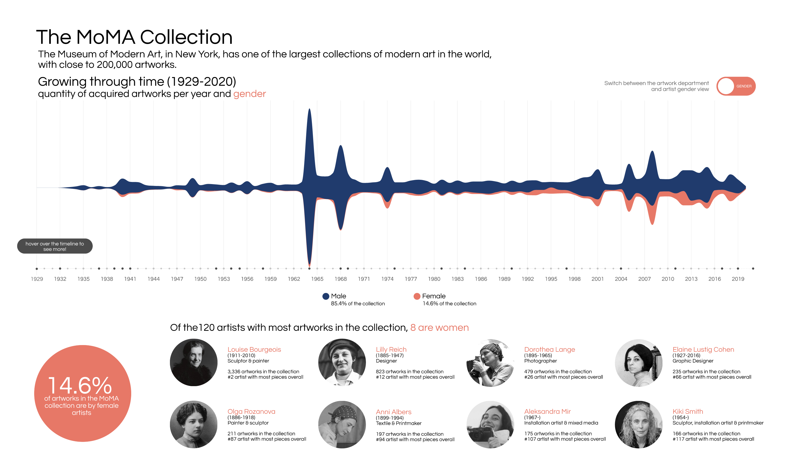

Visualizing MoMA
I built an interactive visualization of the New York Museum of Modern Art (MoMA) collection from 1929 to 2019. The visualization can be filtered by art medium or artist gender to explore how the collection has evolved over time, presenting museum collection patterns through a social justice lens and revealing the gender imbalance in the museum's acquisitions.
Links
